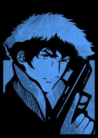
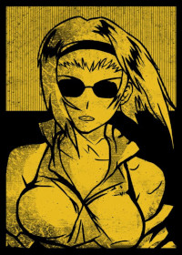
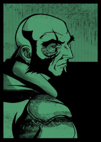
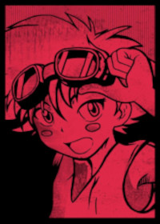

Selecione um personagem
- 
- 
- 
- 
Spike Spiegel
Um caçador de recompensas descolado e habilidoso, com um passado misterioso. Ele possui um estilo de luta único, combinando artes marciais e um domínio excepcional das armas de fogo. Spike é carismático e tem um senso de humor sarcástico, mas também carrega um certo ar de melancolia.